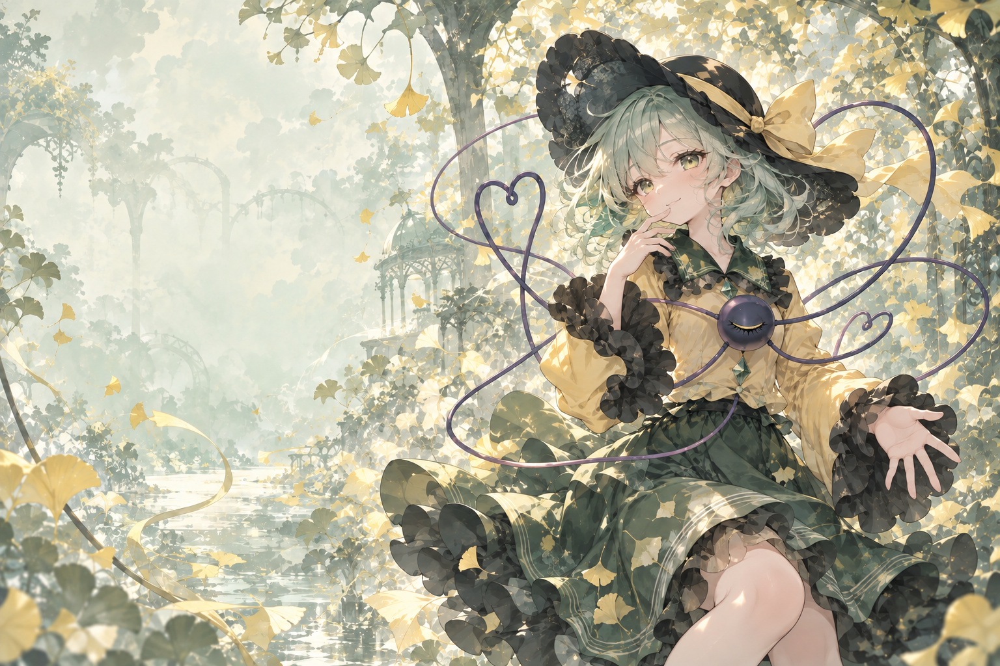
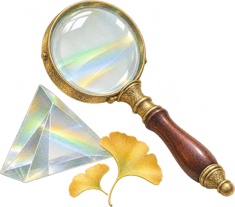
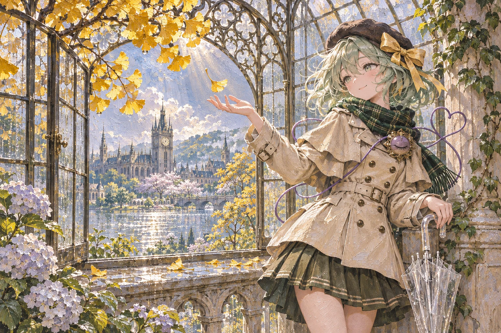
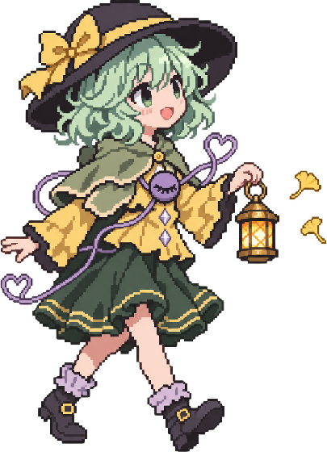
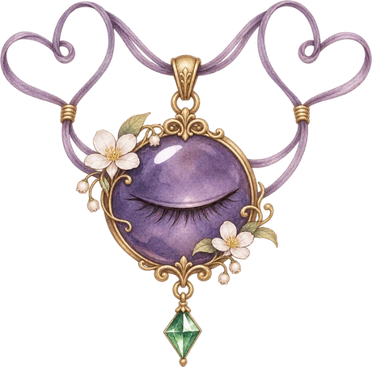
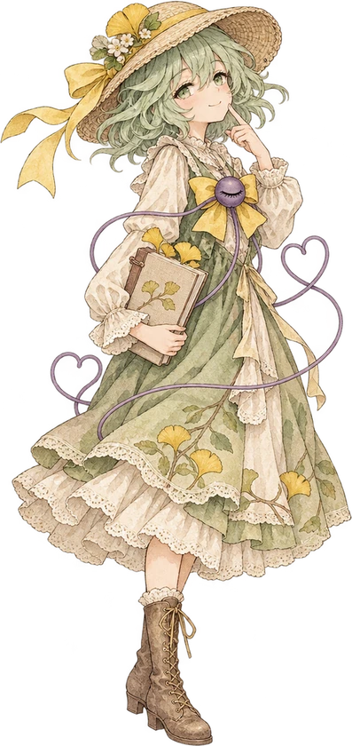

ICIG
已录用

Research
已录用
Visual Degradation

远处钟楼的边缘、花房窗框的轮廓，还有枝梢细碎的银杏纹理。无论散焦、雾霭还是雨雪，图像复原关心的都是如何从退化画面里找回这些细节。
拖动分界线，或用方向键，比较退化示意和原始插画。

Interests
研究之外的灵感与收藏
游戏

喜欢东方 Project 的角色设定与世界观，也偏爱美术精致、节奏舒缓的独立游戏。写完代码后，偶尔会在像素灯光与探索地图里放空一会儿。
音乐

常听东方同人编曲、游戏原声带与轻快的器乐纯音乐。读论文或调模型时，一段熟悉而安静的旋律总能把节奏稳下来。
动漫
偏爱轻松治愈的日常番、细腻的光影分镜与有想象力的美术风格，也会随手收藏让人眼前一亮的色彩搭配和同人插画。
Notebook
代码与实验
把算法拆成可以验证的小问题。读开源实现，也记录实验条件和观察到的现象。
学术阅读
留意空间与频率表示各自保留了什么，也关注生成模型的质量与推理开销。
日常积累
记下语言学习中的新表达、读到的有趣问题，以及二次元作品里值得回看的细节。
About

我是 Sunrikis。我喜欢追问一张图像为什么会变模糊，以及边缘和纹理是怎样重新变得清晰的。这里是我整理视觉研究与算法思路的地方。
无意识庭院借用了古明地恋的意象。研究之外，游戏、音乐、动漫、语言学习和偶然遇到的灵感，也都可以在这里留一页。
